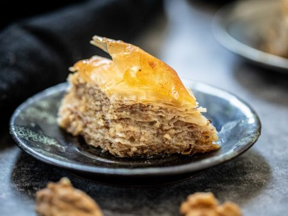

BOSNIAN BAKLAVA
Bosnian baklava is a rich, sweet pastry made of layers of thin phyllo dough, filled with ground walnuts, and soaked in a fragrant sugar syrup. Unlike other regional versions, Bosnian baklava is known for its subtle lemony syrup and soft, juicy texture that melts in the mouth.
To make Bosnian baklava, start by layering sheets of phyllo dough in a greased baking pan, brushing each sheet with melted butter... (continue description)
Ingredients
- 1 package of phyllo dough (about 500g or 1 lb)
- 300g (about 3 cups) ground walnuts ...
Instructions
- Preheat your oven to 175°C (350°F)... ...